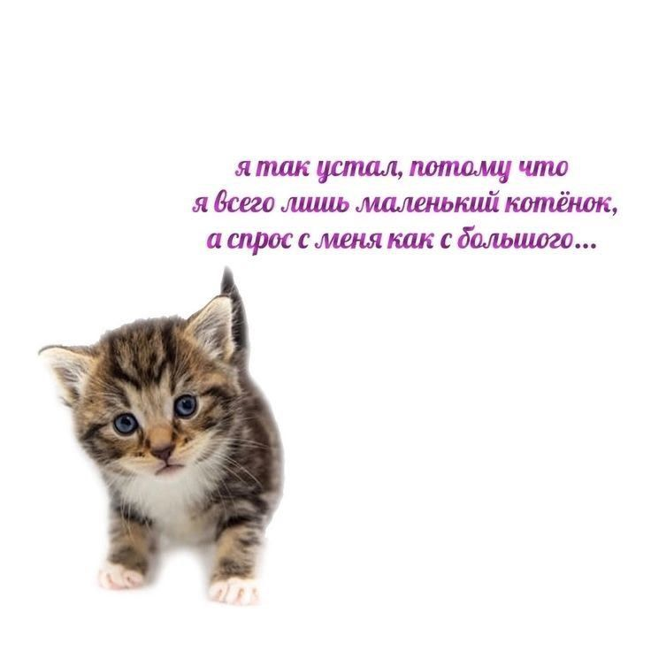
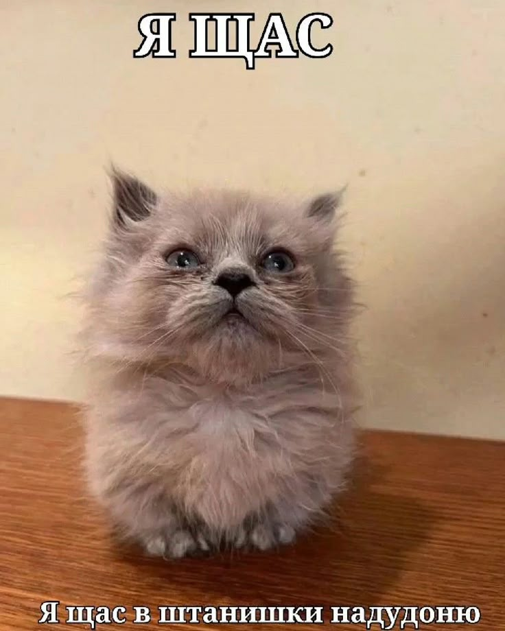
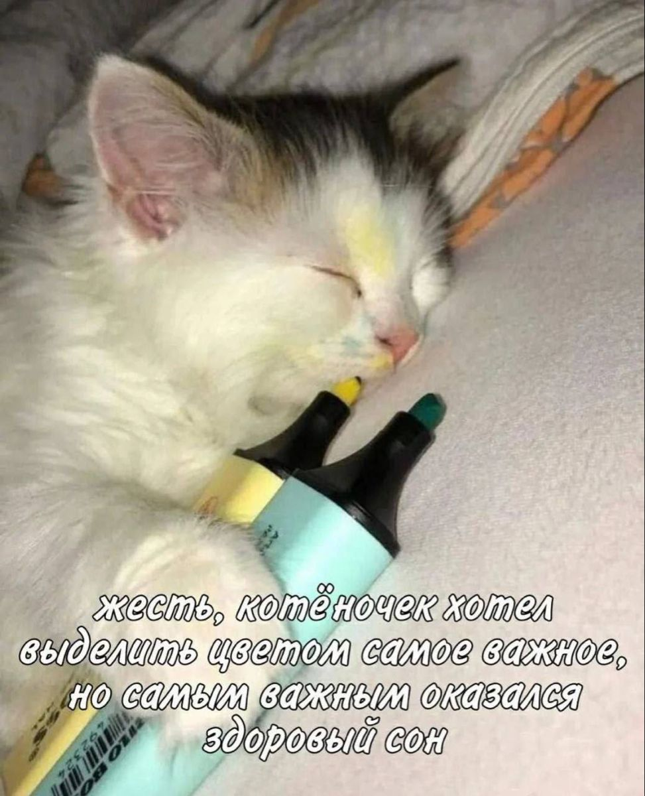
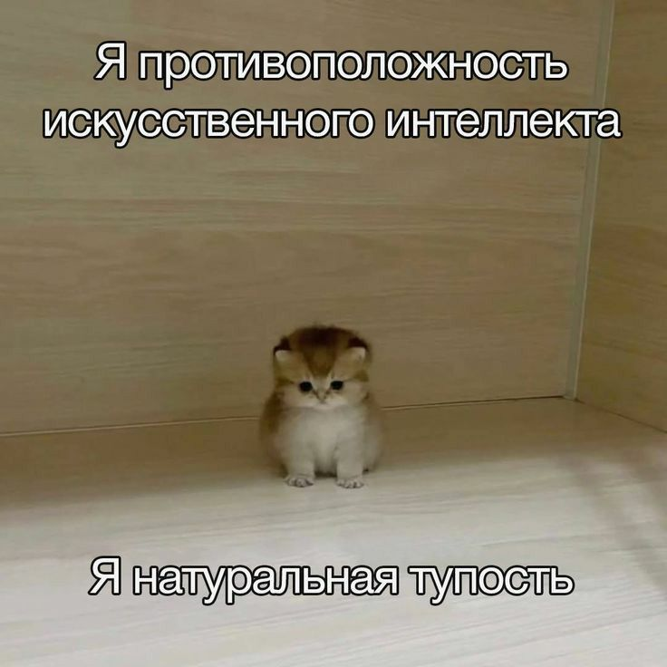
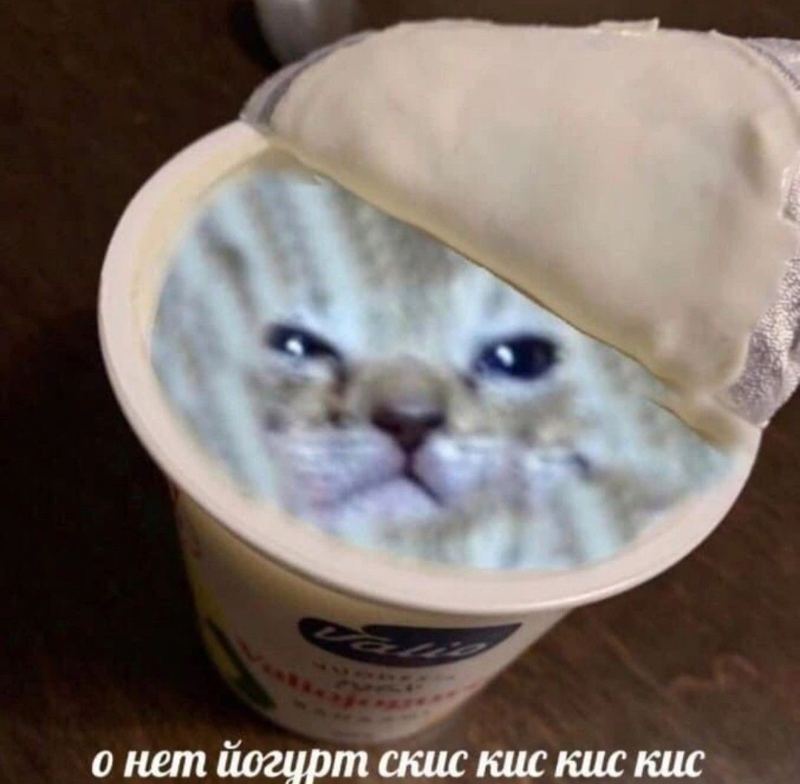
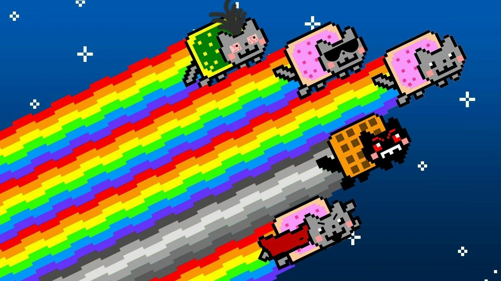
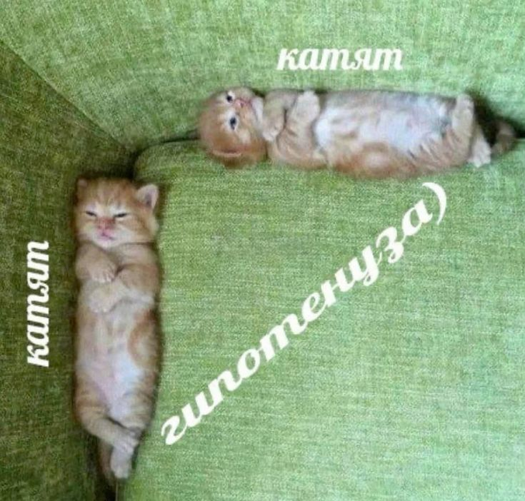

Кошечки в мемах

Huh cat
Кот Бендер или Huh Cat стал мировой знаменитостью в одночасье — после появления вирусного видео в 2011 году, в котором вредный питомец «отчитывает» хозяйку. Особую популярность кот обрёл в России — сегодня его возмущённую мордочку можно увидеть на рекламных щитах и в многочисленных мемах в интернете. «Наш» — решили тысячи россиян, глядя на «быкующего» питомца. Однако оказалось, что Бендер живёт за тысячи километров от нашей страны, в австралийском Мельбурне.15-летний кот живёт вместе со своей хозяйкой в скромной квартире в предгорьях хребта Данденонг в штате Виктория. И да, в Австралии он знаменит не меньше, чем Кайли Миноуг. Владелица Бендера — 73-летняя Нелли Кейдж — ведёт видеодневники о любимом толстячке и своих внуках. Женщина и не представляла, что в 70 лет её так увлечёт создание контента для соцсетей и общение с подписчиками, но теперь это её постоянное хобби, которому Нелли уделяет всё свободное время.
Мои любимые мемы с котиками:





Nyan cat

«Nyan Cat» — видеоролик, загруженный на видеохостинг YouTube в апреле 2011 года и ставший популярным визуально-музыкальным интернет-мемом. Ролик содержит мотивы из японской поп-музыки и движущийся рисунок кошки с телом из печенья «Поп-тартс», летящей по космосу и оставляющей за собой шлейф из радуги. Видео заняло пятое место по количеству просмотров в 2011 году.
В мае 2013 года Кристофер Торрес и Чарльз Шмидт, создатели Nyan Cat и Keyboard Cat, подали в суд на 5th Cell и Warner Bros. за нарушение авторских прав на товарный знак в связи с появлением котов без разрешения в серии видеоигр Scribblenauts. Торрес и Шмидт зарегистрировали авторские права на своих персонажей. Торрес опубликовал заявление, в котором говорилось, что он пытался получить компенсацию от 5th Cell и Warner Bros. за коммерческое использование персонажа, но неоднократно подвергался «неуважению и пренебрежению»[42]. Иск был урегулирован в сентябре 2013 года, когда Кристофер и Чарльз получили деньги за использование персонажей

Рекомендуется к ознакомлению:
Хрюшечки
Собачечки
Пельмешечки
А также:
Первая страница
Написать письмо